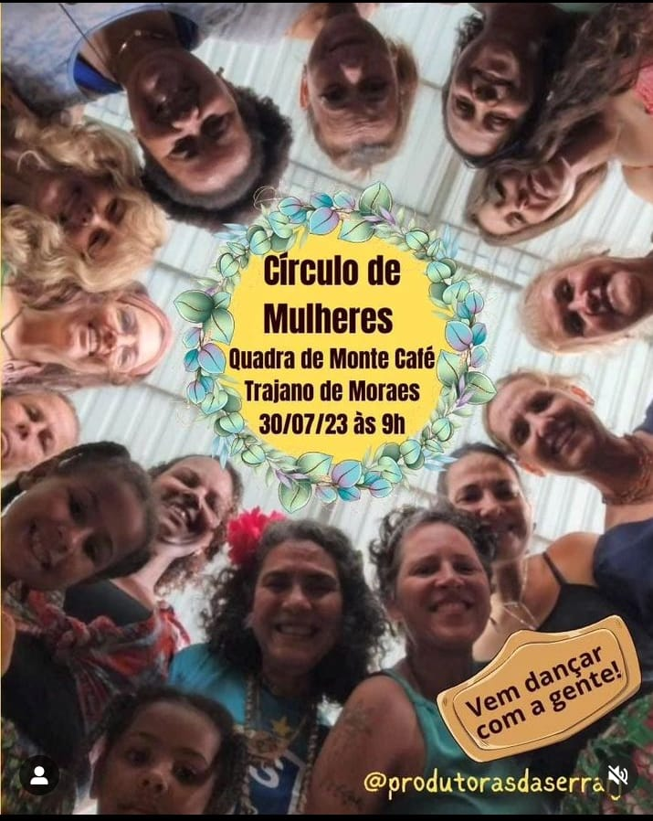
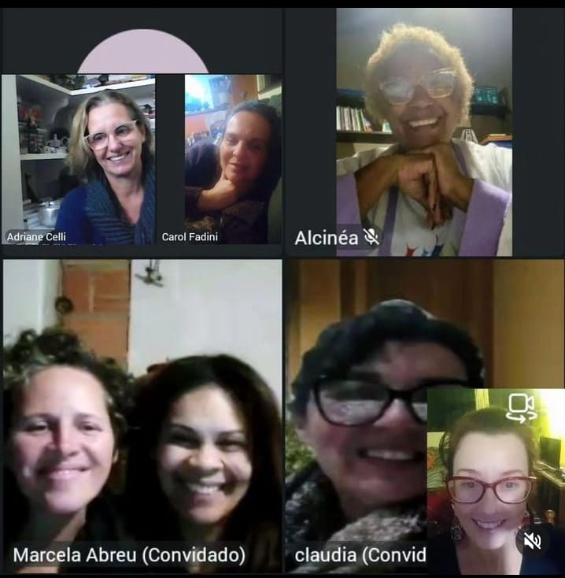
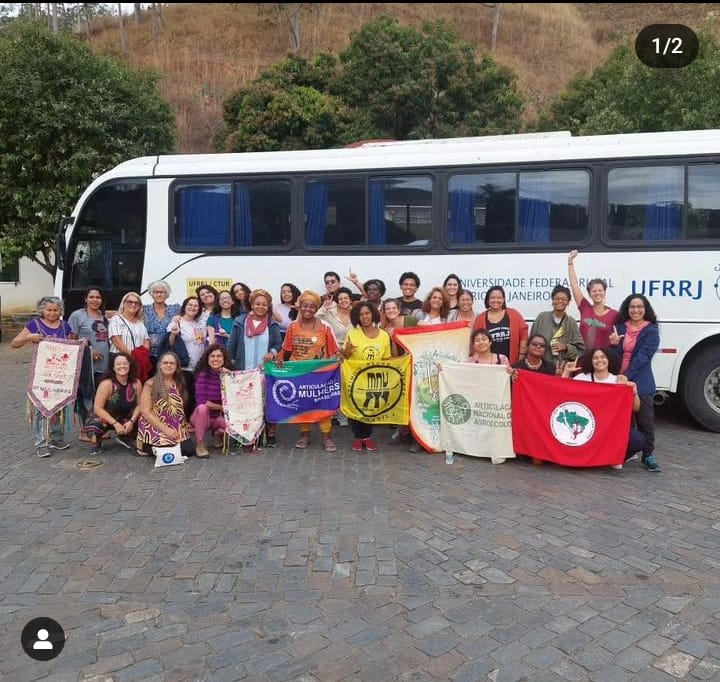

A atividade tem como objetivo central o diálogo a respeito da trajetória do conceito de gênero nas ciências humanas e o debate sobre as questões de gênero e sua interseccionalidade no mundo contemporâneo, de modo a contribuir para uma educação crítica, cidadã e comprometida com a defesa da convivência na diversidade e dos direitos humanos e sociais.
Nucleo Gestor
Circulo de Muheres
Reunião Online do projeto
Mulheres do RJ rumo à Marcha das Margaridas